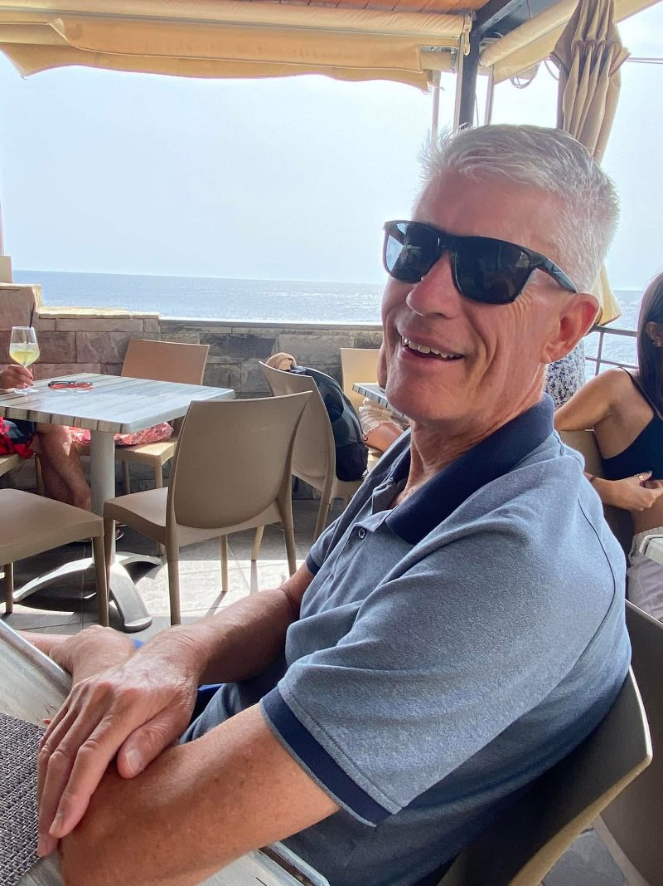

Lore
The league's official lore, curated by the Commissioner: title fights, traditions, and the stories we'll be telling at the draft for decades. Record nights and photo finishes live in the Record Book.
📌 Featured
🎩 Tradition · 2026Tom Kochheiser Day: League Patron Saint
Tom Kochheiser Day: League Patron Saint

September 30th: a league holy day.
Every league needs a patron saint. Ours is Tom Kochheiser, Bradley Kochheiser's dad, born September 30, 1956.
"Girls want to be him, Guys want to be with him."
Happy Birthday, Tom!
2025 · Week 14 · A league legendThe Betrayal
Part I: The Deception
The Betrayal
The night Jacob Maddox benched his entire roster, and the Commissioner fell.
Cold open
Final score: Drew Hartman 129.15, Jacob Maddox 9.4.
The lowest score in league history. The biggest margin of defeat in league history, 119.75 points. It wasn't an accident, a bye-week disaster or a forgotten lineup. According to league legend, it was a message.
The race
Week 14 of 2025 was the last week of the regular season. Six playoff spots. Going in: Nick Cardillo, Bradley Kochheiser, Parker Williams and Jacob Maddox all sat at 8-5. Taylor Alvarado, Kyle Llano and Drew Hartman were 7-6. And in 8th place, at 6-7, the Commissioner: Ryan Nussdorfer, running THE Dictator with the third-most points in the league (1,687.85).
The math was cruel but simple. Ryan had to beat Nick Cardillo, and he needed Drew Hartman to lose. With the rest of the week playing out as it did, that would have left Ryan, Drew and Kyle Llano at 7-7, with Ryan holding the points edge for the last seed. Drew's opponent that week: Jacob Maddox.
The Deception
Jacob had already clinched a playoff spot; win or lose, he was in. So he set a lineup with exactly one starter: Bijan Robinson in the FLEX spot. Every other slot sat empty, and the rest of the roster rotted on the bench: Josh Allen (39.35), Zay Flowers (21.6), Jameson Williams (17.3), Kenneth Gainwell (16.2), Jaylen Warren (15.2) and the rest. That's 166.75 points on the bench.
Bijan scored 9.4. Even a by-the-book lineup from that same bench would have put up 138.15, enough to beat Drew's 129.15. The door to the playoffs, the one door Ryan needed held shut, swung wide open for Drew.
| FLEX | Bijan Robinson | 9.4 |
| Starters | 9.4 |
Bench (166.75 pts)
| BE | Josh Allen QB | 39.35 |
| BE | Zay Flowers WR | 21.6 |
| BE | Jameson Williams WR | 17.3 |
| BE | Kenneth Gainwell RB | 16.2 |
| BE | Jaylen Warren RB | 15.2 |
| BE | Brian Thomas Jr. WR | 11.7 |
| BE | D'Andre Swift RB | 11.2 |
| BE | Jake Ferguson TE | 10.8 |
| BE | Chris Godwin Jr. WR | 10.5 |
| BE | Davante Adams WR | 6.9 |
| BE | Matt Prater K | 6 |
| BE | George Kittle TE | 0 |
| BE | 49ers D/ST D/ST | 0 |
| QB | Jared Goff | 19.75 |
| RB | Tony Pollard | 30.1 |
| RB | Josh Jacobs | 17.2 |
| WR | DK Metcalf | 22.8 |
| WR | Justin Jefferson | 3.1 |
| TE | Kyle Pitts Sr. | 15 |
| FLEX | DeVonta Smith | 7.7 |
| D/ST | Packers D/ST | 3.5 |
| K | Cam Little | 10 |
| Starters | 129.15 |
Bench (5.4 pts)
| BE | Keon Coleman WR | 3.6 |
| BE | Travis Kelce TE | 1.8 |
| BE | Chuba Hubbard RB | 0 |
| BE | Marvin Harrison Jr. WR | 0 |
| IR | Cam Skattebo RB | 0 |
| BE | TreVeyon Henderson RB | 0 |
| QB | Daniel Jones | 1.4 |
| RB | De'Von Achane | 17.5 |
| RB | Bucky Irving | 16.1 |
| WR | CeeDee Lamb | 19.1 |
| WR | Rashee Rice | 7.4 |
| TE | Trey McBride | 10.8 |
| FLEX | A.J. Brown | 17 |
| D/ST | Browns D/ST | 4 |
| K | Cameron Dicker | 18 |
| Starters | 111.3 |
Bench (68.35 pts)
| BE | Lamar Jackson QB | 22.25 |
| BE | RJ Harvey RB | 22 |
| IR | Omarion Hampton RB | 14.7 |
| BE | Jaguars D/ST D/ST | 13.5 |
| BE | Terry McLaurin WR | 7.1 |
| BE | Emeka Egbuka WR | 3.5 |
The fall
Drew moved to 8-6 and grabbed the last playoff spot as the #6 seed. Jacob still went in as the #5 seed, beat Taylor 156.65-124.2, and fell to Nick Cardillo 174.55-151 one round short of the title match.
Ryan lost to Cardillo 118.9-111.3, finished the regular season 6-8 and missed the playoffs, finishing 9th despite the third-most points in the league (1,799.15).
The historian's footnote: the legend blames Jacob, and Jacob did take away one of the two things Ryan needed. The ledger also notes that Ryan's own bench held Lamar Jackson's 22.25 points while Daniel Jones started at QB and scored 1.4. Legends are rarely tidy.
The rise of the Dictator
League legend marks it as the moment the Commish era ended: the Commissioner died that day, and the Dictator was born. The team had already been rebranded from THE Commish (2021-2024) to THE Dictator for 2025. Week 14 is when the name stopped being a joke.
The Dictator's rule now extends to the dynasty era. Through three weeks of 2026, Ryan's new team, Mr McGibblets, leads the league in scoring with 500.5 points. Jacob's HulkSmash sits atop the standings at 5-1. The sequel writes itself.
2024 · Week 17 · A league legendThe Heist
Garbage Time
The Heist
The night a garbage-time drive in a game that was already lost stole a championship.
Cold open
Final score: Brian Mulvihill 150.06, Nicholas Kasik 149.98.
The 2024 championship was decided by 0.08 points, the closest game in league history, regular season or playoffs. It gave Brian his second title (2022, 2024) and took the Belt back from Ryan Nussdorfer. For Kasik, it is the title he had in hand with under three minutes to play, and lost.
The road
Brian's Wubba Lubba Dub Dubs came in as the #2 seed, took the first-round bye, and beat Kyle Llano 128.12-109.48 in the semifinal.
Kasik's Torts Illustrated came in as the #4 seed and had to win twice: 141.94-132.06 over Bradley Kochheiser, then 175.88-135.22 over Ryan in the semifinal. ESPN liked Kasik in the final, projecting 138.06 to Brian's 127.34.
Five days
NFL week 17 ran from Christmas Day to Monday night. Brian's Chris Boswell kicked off the week on Wednesday with 4.0. On Saturday, Cincinnati beat Denver 30-24 and Kasik's Joe Burrow (36.98) and Tee Higgins (40.1) put up 77.08 points from one game, against 19.2 from Brian's Ja'Marr Chase. Earlier that day Kasik's Hunter Henry went 0 catches on 2 targets for 0.0, with T.J. Hockenson's 11.8 on the bench.
Sunday belonged to Brian: Malik Nabers 36.1, Baker Mayfield 34.56, Saquon Barkley 18.9.
Going into Monday: Brian 136.36, Kasik 123.68. Each man had one starter left, and they were in the same game, Lions at 49ers on Monday Night Football. Kasik had Jahmyr Gibbs. Brian had Jauan Jennings.
Monday night
Gibbs did his job: 117 rushing yards on 18 carries and 4 catches for 46, worth 26.3 points. With 2:58 left he ran 30 yards for a touchdown that put Detroit up 40-28, and it flipped the title. Fantasy scoreboard: Kasik 149.98, Brian 143.86.
Jennings had 4 catches for 35 yards (7.5 points) at that point. The 49ers were down 12 with under three minutes to play. The game was over. The championship was not: Brian needed 6.13 more points from Jennings.
Garbage time
2:58 left. Down 12. The 49ers get the ball back, and the title is riding on a man playing out the string.
- 2:30: deep shot to Jennings, incomplete.
- 2:22: Jennings, 8 yards (+1.8).
- 2:00: two-minute warning.
- 1:45: Brock Purdy is sacked for a 7-yard loss and hurt on the play. The 49ers burn a timeout. The building goes quiet.
And then the lights go out.
*GLASS SHATTERS*
The crowd knows that sound. They're looking for Stone Cold. Instead, down the ramp walks Joshua Dobbs, Jauan Jennings's old quarterback at Tennessee. They were Vols together in 2015 and 2016; in 2016, Dobbs threw Jennings the 43-yard Hail Mary that beat Georgia as time expired. Eight years later, same two guys, one more drive, and a fantasy title neither of them knew they were deciding.
- 1:36: Dobbs to Jennings, 15 yards (+2.5). Replay reverses the out-of-bounds ruling; the catch stands.
- 1:17: Dobbs to Jennings again, 9 yards to the Detroit 18 (+1.9).
- 0:54: Dobbs looks for Jennings one more time, incomplete.
Dobbs finished the drive himself, the extra point went wide, the onside kick went out of bounds, and the 49ers lost 40-34. Didn't matter. Three catches, 32 yards, 6.2 points, and Brian needed 6.13. Jennings finished 7 catches for 67 yards, 13.7 points, and Brian won the title 150.06-149.98. Kasik lost it by 0.08.
To this day, there is still a phone-sized hole in Nick Kasik's living room wall.
| QB | Baker Mayfield | 34.56 |
| RB | Saquon Barkley | 18.9 |
| RB | Tyrone Tracy Jr. | 9.3 |
| WR | Malik Nabers | 36.1 |
| WR | Ja'Marr Chase | 19.2 |
| TE | Tucker Kraft | 7.3 |
| FLEX | Jauan Jennings | 13.7 |
| D/ST | Vikings D/ST | 7 |
| K | Chris Boswell | 4 |
| Starters | 150.06 |
Bench (56.48 pts)
| BE | Sam Darnold QB | 24.78 |
| BE | Alec Pierce WR | 24.2 |
| BE | Khalil Shakir WR | 5.5 |
| BE | Javonte Williams RB | 2 |
| BE | Alvin Kamara RB | 0 |
| BE | Jaylen Waddle WR | 0 |
| QB | Joe Burrow | 36.98 |
| RB | Jahmyr Gibbs | 26.3 |
| RB | James Cook | 11.3 |
| WR | Tee Higgins | 40.1 |
| WR | Justin Jefferson | 17.2 |
| TE | Hunter Henry | 0 |
| FLEX | Calvin Ridley | 14.1 |
| D/ST | Colts D/ST | -4 |
| K | Tyler Bass | 8 |
| Starters | 149.98 |
Bench (63.06 pts)
| BE | Bo Nix QB | 21.86 |
| BE | Jaylen Warren RB | 16.2 |
| BE | T.J. Hockenson TE | 11.8 |
| BE | Kareem Hunt RB | 8 |
| BE | DK Metcalf WR | 7.2 |
| IR | Austin Seibert K | 0 |
| BE | Steelers D/ST D/ST | -2 |
The ledger
As Nicholas Kasik tells it, and he would know, because he still carries it, the glass shattered and Dobbs fed Jennings four straight times, 4 catches for 38 yards, marching the ball all the way to the 1-yard line with the 49ers down 14.
The historian's record is a little more modest: on that last drive Jennings caught 3 passes for 32 yards on 5 targets, two of them from Dobbs, with San Francisco down 12. The drive never got closer than the Detroit 7 before Dobbs ran it in himself. (Add Jennings's 5-yard catch from the drive before and it's 4 for 37, but San Francisco was down only six then.) Legends round up. It didn't matter: any one of those three catches was worth more than the 0.08 margin.
The historian's footnote: Kasik didn't lose it only on Monday. Hunter Henry's 0.0 started while Hockenson's 11.8 sat on the bench, and his best possible lineup was 168.68. Brian left points on his bench too: Sam Darnold 24.78 and Alec Pierce 24.2 (optimal 160.56). Officially, Nabers' 36.1 made him the Super Bowl MVP. Unofficially, the Real MVP is a backup quarterback who wasn't on either roster, in an NFL game that was already decided: Joshua Dobbs. His two completions to Jennings on the final drive went for 24 yards and 4.4 points. Without them, Kasik wins. The game literally didn't matter, and it decided everything.
See the 2024 final card and the full box score.
They don't ask the boys how, they just ask how many.
🥇 Championships
Every title match, with both starting lineups from the box score. The Super Bowl MVP is the top-scoring starter on the winning side.
2025 · Week 17 · Belt reign #5
Nick takes the Belt
Nick takes the Belt
Nick Cardillo won by 7.65 and raised the Belt, succeeding Brian Mulvihill.
Starting lineups
| QB | Jalen Hurts | 9.5 |
| RB | Christian McCaffrey MVP | 29.1 |
| RB | Travis Etienne Jr. | 11.2 |
| WR | Chris Olave | 26.9 |
| WR | George Pickens | 11.8 |
| TE | Harold Fannin Jr. | 11 |
| FLEX | Mike Evans | 12.1 |
| D/ST | Seahawks D/ST | 13 |
| K | Brandon Aubrey | 16 |
| Starters | 140.6 |
Bench (60 pts)
| BE | Zach Charbonnet RB | 27.2 |
| BE | Rhamondre Stevenson RB | 27.2 |
| BE | Ladd McConkey WR | 4.1 |
| BE | Tetairoa McMillan WR | 1.5 |
| BE | Taysom Hill TE | 0 |
| QB | Brock Purdy | 40.45 |
| RB | Kyren Williams | 16 |
| RB | Rico Dowdle | 9.3 |
| WR | Amon-Ra St. Brown | 14.8 |
| WR | Jakobi Meyers | 7.9 |
| TE | Dallas Goedert | 9.8 |
| FLEX | Puka Nacua | 15.7 |
| D/ST | Lions D/ST | 10 |
| K | Tyler Loop | 9 |
| Starters | 132.95 |
Bench (71.1 pts)
| BE | Caleb Williams QB | 27.3 |
| BE | Wan'Dale Robinson WR | 23.3 |
| BE | Woody Marks RB | 8.5 |
| BE | Michael Carter RB | 6.3 |
| BE | Dylan Sampson RB | 5.7 |
| IR | James Conner RB | 0 |
2024 · Week 17 · Belt reign #4
Brian takes the Belt
Brian takes the Belt
Brian Mulvihill won by 0.08 and raised the Belt, succeeding Ryan Nussdorfer.
Starting lineups
| QB | Baker Mayfield | 34.56 |
| RB | Saquon Barkley | 18.9 |
| RB | Tyrone Tracy Jr. | 9.3 |
| WR | Malik Nabers MVP | 36.1 |
| WR | Ja'Marr Chase | 19.2 |
| TE | Tucker Kraft | 7.3 |
| FLEX | Jauan Jennings | 13.7 |
| D/ST | Vikings D/ST | 7 |
| K | Chris Boswell | 4 |
| Starters | 150.06 |
Bench (56.48 pts)
| BE | Sam Darnold QB | 24.78 |
| BE | Alec Pierce WR | 24.2 |
| BE | Khalil Shakir WR | 5.5 |
| BE | Javonte Williams RB | 2 |
| BE | Alvin Kamara RB | 0 |
| BE | Jaylen Waddle WR | 0 |
| QB | Joe Burrow | 36.98 |
| RB | Jahmyr Gibbs | 26.3 |
| RB | James Cook | 11.3 |
| WR | Tee Higgins | 40.1 |
| WR | Justin Jefferson | 17.2 |
| TE | Hunter Henry | 0 |
| FLEX | Calvin Ridley | 14.1 |
| D/ST | Colts D/ST | -4 |
| K | Tyler Bass | 8 |
| Starters | 149.98 |
Bench (63.06 pts)
| BE | Bo Nix QB | 21.86 |
| BE | Jaylen Warren RB | 16.2 |
| BE | T.J. Hockenson TE | 11.8 |
| BE | Kareem Hunt RB | 8 |
| BE | DK Metcalf WR | 7.2 |
| IR | Austin Seibert K | 0 |
| BE | Steelers D/ST D/ST | -2 |
2023 · Week 17 · Belt reign #3
Ryan takes the Belt
Ryan takes the Belt
Ryan Nussdorfer pinned the reigning champ by 31.36 and ripped the Belt off his waist.
Starting lineups
| QB | Kyler Murray | 23.68 |
| RB | De'Von Achane | 23.7 |
| RB | Rachaad White | 8.6 |
| WR | CeeDee Lamb MVP | 40.2 |
| WR | Chris Olave | 5.6 |
| TE | Isaiah Likely | 18.2 |
| FLEX | James Conner | 26.3 |
| D/ST | Bears D/ST | 11 |
| K | Jake Moody | 9 |
| Starters | 166.28 |
Bench (44.24 pts)
| BE | Chris Godwin WR | 17.1 |
| BE | Brian Robinson Jr. RB | 11.6 |
| BE | Taysom Hill TE | 11.54 |
| BE | Austin Ekeler RB | 4 |
| IR | Mark Andrews TE | 0 |
| BE | Courtland Sutton WR | 0 |
| BE | Raheem Mostert RB | 0 |
| QB | Justin Fields | 25.22 |
| RB | Isiah Pacheco | 29.5 |
| RB | Christian McCaffrey | 13.1 |
| WR | Zay Flowers | 19.6 |
| WR | Calvin Ridley | 7.9 |
| TE | Cole Kmet | 0 |
| FLEX | Michael Pittman Jr. | 9.6 |
| D/ST | Bills D/ST | 19 |
| K | Brandon Aubrey | 11 |
| Starters | 134.92 |
Bench (47.82 pts)
| BE | C.J. Stroud QB | 12.92 |
| BE | Ezekiel Elliott RB | 11.5 |
| BE | Garrett Wilson WR | 9.9 |
| BE | Gerald Everett TE | 7.7 |
| BE | Romeo Doubs WR | 5.8 |
| BE | Jaylen Waddle WR | 0 |
2022 · Week 17 · played January 2023 · Belt reign #2
📌 The Championship That Was Never Finished
📌 The Championship That Was Never Finished
Brian Mulvihill won by 25.9 and raised the Belt, succeeding Bradley Kochheiser.
The 2022 title game (NFL week 17, played January 2023) was Brian Mulvihill vs. Matthew Vinson, and it ran straight into the Bills-Bengals Monday night game on January 2, 2023, the night Damar Hamlin collapsed on the field. The NFL never resumed that game, so the league decided the title itself: the affected players were scored using their averages, with the outlying highs and lows removed to cut down the variance. Brian won and took the Belt.
What ESPN recorded: a 108.4-82.5 final, with every player from the cancelled game credited 0 points. In the starting lineups that meant Joe Burrow for Brian, and Josh Allen, Ja'Marr Chase and Evan McPherson for Matthew. ESPN doesn't store the league's average-based adjusted scores. If anyone kept the adjusted numbers, add them here.
Starting lineups
| QB | Joe Burrow | 0 |
| RB | Josh Jacobs | 19.5 |
| RB | Dalvin Cook | 6.4 |
| WR | DeVonta Smith MVP | 20.5 |
| WR | A.J. Brown | 19.7 |
| TE | Gerald Everett | 10.5 |
| FLEX | Jerry Jeudy | 10.8 |
| D/ST | Cowboys D/ST | 9 |
| K | Daniel Carlson | 12 |
| Starters | 108.4 |
Bench (106.4 pts)
| BE | Mike Evans WR | 48.7 |
| BE | D'Andre Swift RB | 27.7 |
| BE | Raheem Mostert RB | 23.1 |
| BE | George Pickens WR | 4.9 |
| BE | Ravens D/ST D/ST | 2 |
| BE | Antonio Gibson RB | 0 |
| QB | Josh Allen | 0 |
| RB | Travis Etienne Jr. | 23 |
| RB | James Conner | 14 |
| WR | Allen Lazard | 10.9 |
| WR | Ja'Marr Chase | 0 |
| TE | T.J. Hockenson | 12.9 |
| FLEX | Ezekiel Elliott | 9.7 |
| D/ST | Patriots D/ST | 12 |
| K | Evan McPherson | 0 |
| Starters | 82.5 |
Bench (14.3 pts)
| BE | Donovan Peoples-Jones WR | 8.3 |
| BE | Tyler Lockett WR | 3.5 |
| BE | Michael Carter RB | 2.5 |
| BE | Deebo Samuel WR | 0 |
| BE | DeAndre Hopkins WR | 0 |
| BE | Tyler Bass K | 0 |
2021 · Week 17 · Belt reign #1
Bradley takes the Belt
Bradley takes the Belt
Bradley Kochheiser won by 13.92 and raised the Belt.
Starting lineups
| QB | Matthew Stafford | 14.26 |
| RB | Austin Ekeler | 20.2 |
| RB | Javonte Williams | 4.2 |
| WR | Justin Jefferson | 11.8 |
| WR | CeeDee Lamb | 8.1 |
| TE | Noah Fant | 21.2 |
| FLEX | Ja'Marr Chase MVP | 55.6 |
| D/ST | Patriots D/ST | 13 |
| K | Nick Folk | 9 |
| Starters | 157.36 |
Bench (99 pts)
| BE | Rashaad Penny RB | 32.5 |
| BE | Elijah Mitchell RB | 21 |
| BE | Jaret Patterson RB | 20.8 |
| BE | Justin Jackson RB | 9.1 |
| BE | DeVonta Smith WR | 8.4 |
| BE | Pat Freiermuth TE | 7.2 |
| IR | Derrick Henry RB | 0 |
| QB | Dak Prescott | 23.04 |
| RB | Alvin Kamara | 21 |
| RB | Ronald Jones II | 3.7 |
| WR | Diontae Johnson | 17.1 |
| WR | Marquise Brown | 3.8 |
| TE | Dalton Schultz | 11.4 |
| FLEX | Amon-Ra St. Brown | 35.4 |
| D/ST | Saints D/ST | 17 |
| K | Evan McPherson | 11 |
| Starters | 143.44 |
Bench (79.12 pts)
| BE | Kyler Murray QB | 22.92 |
| BE | Sony Michel RB | 18.9 |
| BE | Dare Ogunbowale RB | 14.8 |
| BE | Christian Kirk WR | 13.9 |
| BE | DeVante Parker WR | 8.6 |
| BE | Clyde Edwards-Helaire RB | 0 |
2020 · Week 16 · Championship · before the Belt
Jacob wins the first title
Jacob wins the first title
Jacob Maddox won by 20.84 and took the league's first title outright. The Belt arrived the next season.
Starting lineups
| QB | Justin Herbert | 16.72 |
| RB | Kenyan Drake | 13 |
| RB | Aaron Jones | 12.8 |
| WR | Mike Evans MVP | 40.1 |
| WR | Brandin Cooks | 27.1 |
| TE | Mark Andrews | 13.6 |
| FLEX | David Montgomery | 20.1 |
| D/ST | Texans D/ST | -9 |
| K | Joey Slye | 2 |
| Starters | 136.42 |
Bench (75.4 pts)
| BE | Nelson Agholor WR | 26.5 |
| BE | Leonard Fournette RB | 15.6 |
| BE | Antonio Brown WR | 13.5 |
| BE | Keke Coutee WR | 10.4 |
| BE | Mike Williams WR | 9.4 |
| BE | Corey Davis WR | 0 |
| BE | Kyle Rudolph TE | 0 |
| QB | Kyler Murray | 15.38 |
| RB | Austin Ekeler | 15.8 |
| RB | Darrell Henderson Jr. | 6.2 |
| WR | Allen Robinson II | 20.3 |
| WR | Calvin Ridley | 17.3 |
| TE | Logan Thomas | 13.3 |
| FLEX | Russell Gage | 6.3 |
| D/ST | Browns D/ST | 6 |
| K | Jason Sanders | 15 |
| Starters | 115.58 |
Bench (55.38 pts)
| BE | Jeff Wilson Jr. RB | 27.4 |
| BE | Jalen Hurts QB | 18.58 |
| BE | Lynn Bowden Jr. RB | 3.6 |
| BE | Tony Pollard RB | 3 |
| BE | Chase Edmonds RB | 2.8 |
| BE | Christian McCaffrey RB | 0 |
| BE | Keenan Allen WR | 0 |
| IR | Michael Thomas WR | 0 |
More lore
🎙️ 🎩 Tradition · Introduced 2026 offseasonPost-Game Press Conferences
The podium awaits
Post-Game Press Conferences
Flashbulbs. A folding table. One microphone, set slightly too low. A banner that says LOEG behind a manager who would very much rather be anywhere else.
Introduced in the 2026 offseason, the Post-Game Press Conference is the league's newest tradition. Every week, the week's biggest loser steps up to the podium and takes questions from the Media.
The rules of the room:
The week's biggest loser takes questions from the Media.
They must answer 3 of them.
On video.
Before Thursday Night Football kickoff.
“No further questions. Thank you, everybody.”
📅 Scheduled to take the podium
The biggest loser is the manager with the biggest losing margin that week, from the Sleeper box scores. That rule matches every confirmed presser. ✅ marks a podium the Commissioner has confirmed.
🗂️ Press Conference Archive
- 2026 week 3: Nick Cardillo (lost by 80.95)
- 2026 week 2: Taylor Alvarado (lost by 65.15)
- 2026 week 1: Bradley Kochheiser (lost by 79.4)
The Great Migration: ESPN redraft to Sleeper dynasty
The Great Migration: ESPN redraft to Sleeper dynasty
After six ESPN redraft seasons (2020-2025), the league moved to Sleeper for 2026 and went dynasty: a 21-round startup draft, superflex lineups, taxi squads and tradeable future picks.
The Belt
The Belt
Starting in 2021 the league plays for a WWE-style championship belt. Bradley Kochheiser was the first man to hold it. Jacob Maddox won the 2020 title before the Belt existed, which makes him the league's one and only Belt-less Champion.
Title fully valid. Belt not included.
Hello, Thank You: First Season, First Title
Hello, Thank You: First Season, First Title
Most managers spend their first season figuring out where the waiver button is. Three of them walked in, said hello, and said thank you for the check and the trophy.
Jacob Maddox, 2020. Why So Serious went 8-5, came in as the #3 seed, and beat Ryan Nussdorfer's Password Is Taco 136.42-115.58 in the final. In fairness, 2020 was the league's first season, so everybody was a rookie. He was just the rookie who won it all. The Belt didn't arrive until 2021, so the title is his outright. 2020 final card
Bradley Kochheiser, 2021. Took over Jonah Hohner's seat, went 10-4 as the #1 seed with Nussy's Lil Chubb, and beat Ryan's THE Commish 157.36-143.44. First season, first Belt: he was the first man ever to wear it. 2021 final card
Nick Cardillo, 2025. Took over Andrew Saur's seat, went 9-5 as the #1 seed with Wet Reckless, and beat Parker Williams' TC Tuggers 140.6-132.95, lifting the Belt off reigning champ Brian Mulvihill in his rookie year. 2025 final card
Two of those three title games came at Ryan Nussdorfer's expense. Welcome to the league.
The Mulvihill Conspiracy: Exhibit A, Exhibit B, and a lot of red string
The Mulvihill Conspiracy: Exhibit A, Exhibit B, and a lot of red string
The corkboard is up. The red string is out. The historian has been asked to sit in the corner and only speak when spoken to.
The theory: Brian Mulvihill doesn't win championships. Championships happen to him. Two titles (2022, 2024), and both arrived in ways nobody could script.
Exhibit A: 2022, the title that waited. Brian's first title game ran straight into the Monday night the whole football world stopped for Damar Hamlin. The fantasy world sat on pause for days, and the league decided the title on player averages (outlying highs and lows removed). See The Championship That Was Never Finished.
The red string, all of it from the data:
- ESPN had Matthew Vinson favored, projecting 134.33 to Brian's 118.19.
- ESPN credited every player from the cancelled game with 0. Matthew had three starters in it (Josh Allen, Ja'Marr Chase, Evan McPherson), worth 50.62 projected points between them. Brian had one (Joe Burrow), projected for 20.43.
- ESPN's recorded final: 108.4-82.5.
- The regular season was suspicious too: 9-5 and the #2 seed (bye included) while ranking only 5th of 10 in points (1,683.76). His all-play record (70-56) said 7.78 wins. He got 9. That +1.22 was tied for the 2nd-luckiest season in the league.
- Semifinal: 117.5-84.46 over Ryan Nussdorfer.
Exhibit B: 2024, the heist. Down to his last starter, losing the title with 2:58 left on Monday night, Brian was saved by a backup quarterback who wasn't on either roster, throwing to Jauan Jennings in a game that was already decided. Final: 150.06-149.98, the closest game in league history. ESPN had projected Nicholas Kasik to win, 138.06-127.34. See The Heist.
The historian clears his throat. 2024 is a terrible exhibit for the prosecution. Brian led the league in points (1,905.44, 1st of 10), had the best all-play record in the league (98-28, worth 10.89 expected wins), and went 10-4. That's 0.89 wins below expectation, the 8th-luckiest of 10. He beat his ESPN projections by 158.9 points across the regular season, won his semifinal 128.12-109.48 over Kyle Llano, and was the best team all year. He just made it look like a heist at the end. Even in 2022 he left 62.8 points on his bench in the final (Mike Evans' 48.7 among them) and still won by 25.9.
The defense rests. The prosecution points at the corkboard and says the string speaks for itself.
Sometimes it's better to be lucky than good.
Lucky or good, two Belts are two Belts, and his name is etched in stone regardless.
🎲 Draft Order Games
data/lore.json, copy an entry, give it a unique id, and rebuild. Categories: game, injury, controversy, tradition, draft, other. Only the Championships section is generated automatically each year.